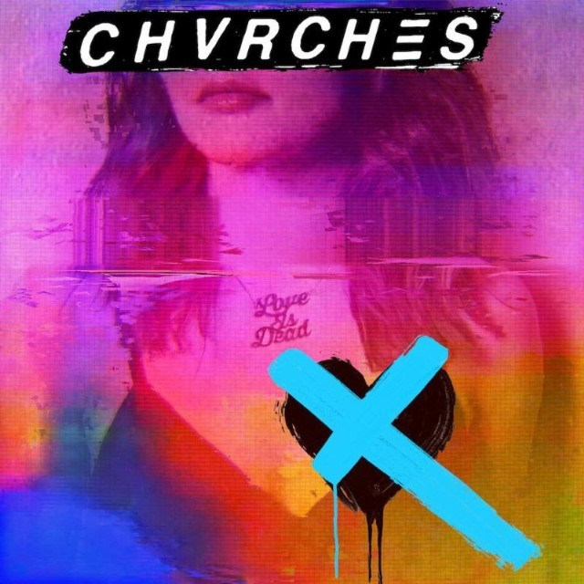
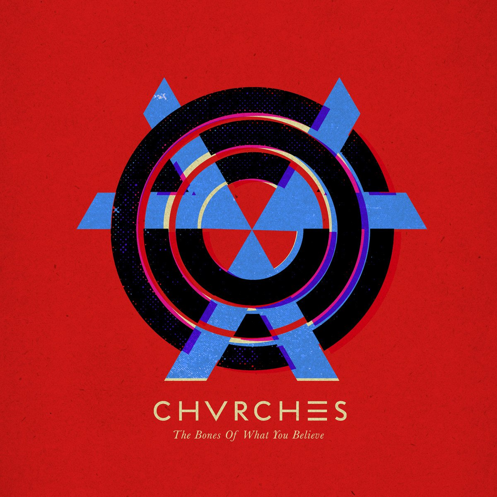

Chansons
- 1 Graffiti 3:39
- 2 Get Out 3:51
- 3 Deliverance 4:13
- 4 My Enemy 3:53
- 5 Forever 3:44
- 6 Never Say Die 4:24
- 7 Miracle 3:08
- 8 Graves 4:44
- 9 Heaven / Hell 5:06
- 10 God's Plan 3:32
- 11 Really Gone 3:12
- 12 II 1:09
- 13 Wonderland 4:36

Chansons

Chansons
- The Mother We Share 3:12
- We Sink 3:34
- Gun 3:54
- Tether 4:46
- Lies 3:41
- Under The Tide 4:32
- Recover 3:46
- Night Sky 3:51
- Science/Visions 3:58
- Lungs 3:03
- By The Throat 4:09
- You Caught The Light 5:38